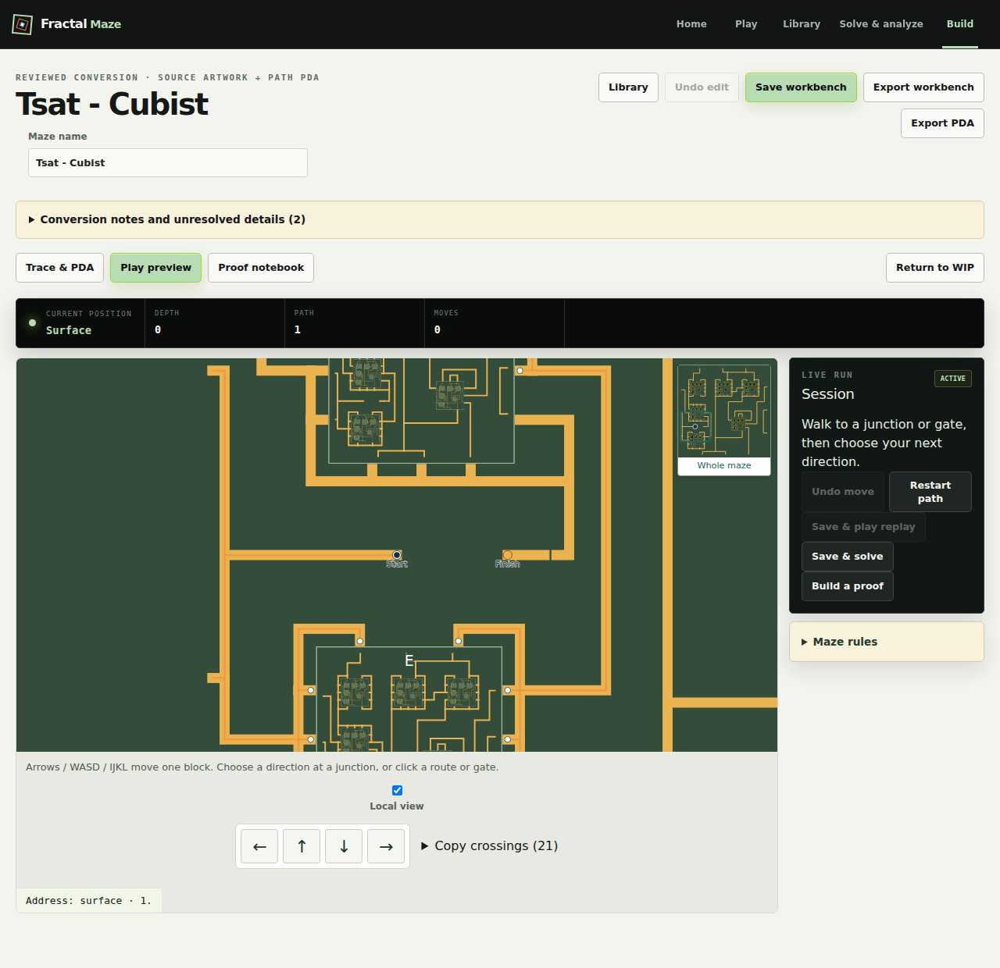
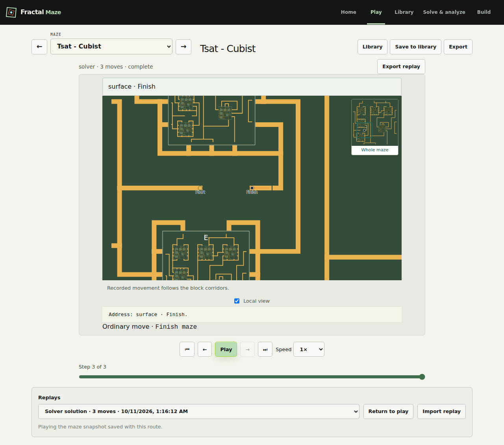
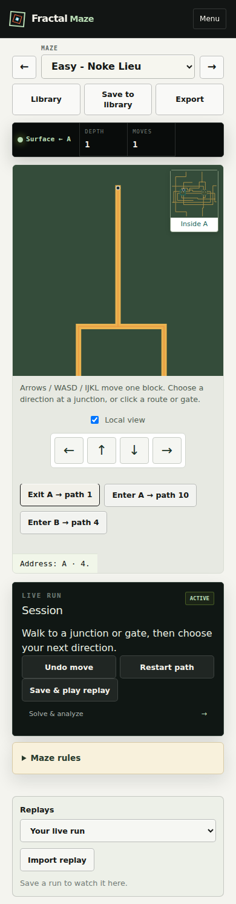

Exact source floor cells, shared physical movement and readable replays. These captures show desktop Tsat Build and a solved replay, plus Noke at depth one on a phone. Source intent and other catalog gaps remain in the completion plan.


